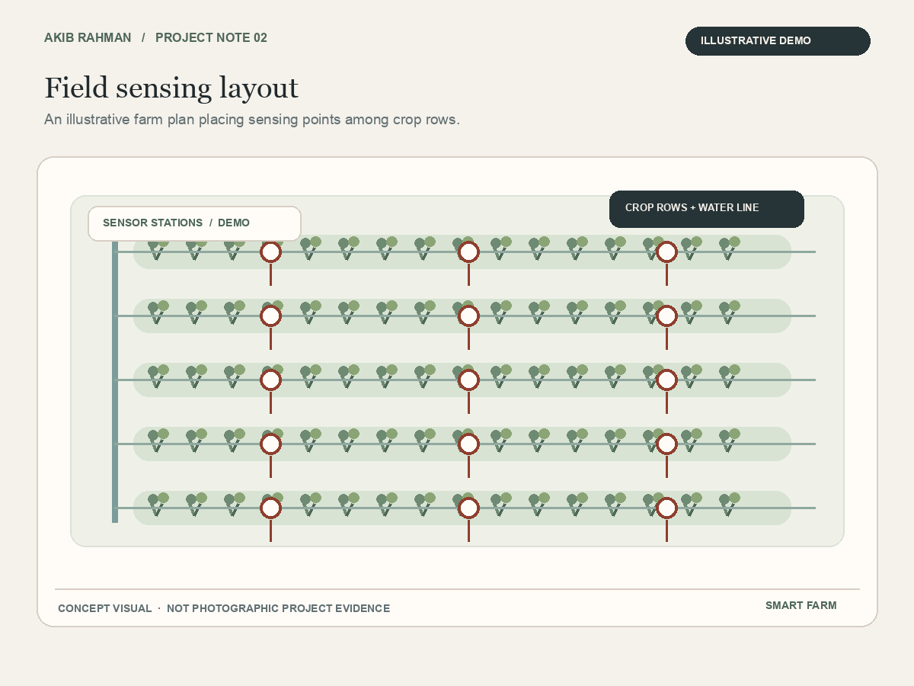
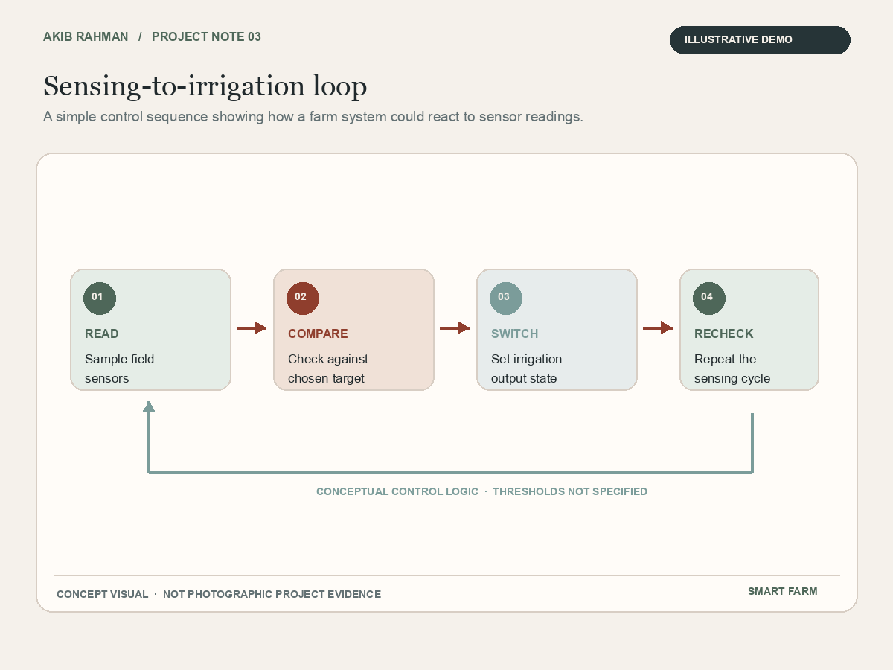
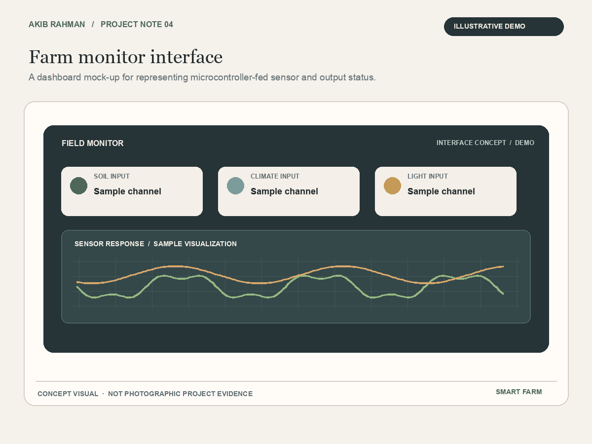

ATmega328P Smart Farm System
I worked with a six-person team on a smart farm concept built around the ATmega328P. We also documented our work in an IEEE-style report.
These four illustrations help explain the project idea. They are visual aids rather than photos or proof of a completed prototype.




ATmega328P system map concept
Field sensing layout illustration
Sensing-to-irrigation flow concept
Farm monitor interface concept
How the project took shape
This six-person group project focused on a smart farm system built around the ATmega328P. We looked at how a microcontroller could sit at the centre of a farming-focused engineering idea.
Alongside the embedded-systems work our team prepared an IEEE-style report to record the technical project. Putting the work into that format gave us practice organizing information and making an engineering project easier for others to follow.
Working in a larger group meant sharing ideas and keeping the written work consistent. I came away with more experience collaborating on a technical project and explaining its purpose in a structured way.
The project remains a useful example of my interest in microcontrollers and practical engineering. The illustrations here show possible ways to picture the concept. They are not documentation of a completed system.
Project focus
- A smart farm concept built around the ATmega328P
- Six-person project team
- IEEE-style technical report
- A focus on embedded systems and clear project documentation